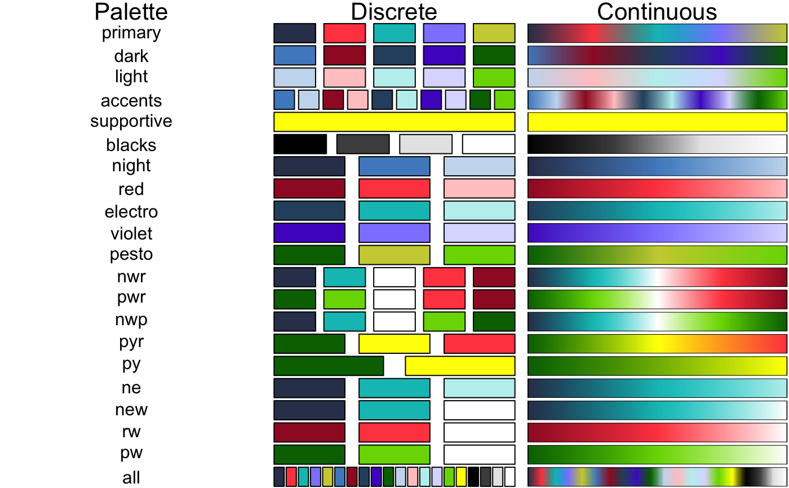

ng_palette_d() and ng_palette_c() (respectively for discrete
and continuous palettes) return functions that take an integer argument (the
required number of colours) and return a character vector of colours' hex
codes.
In addition, the functions also recognize the
viridis palettes: "magma" (or "A"),
"inferno" ("B"), "plasma" ("C"), "viridis" ("D"), or "cividis" ("D").
ng_palette_d(name = "all", reverse = FALSE) ng_palette_c(name = "magma", reverse = FALSE, ...) display_ng_palettes()
| name | Character name of the Nightingale (or viridis) colour palette. |
|---|---|
| reverse | Boolean indicating whether the palette should be reversed. |
| ... | Additional arguments to pass to
|
#' # Display Nightingale's colour palettes display_ng_palettes()# Get 4 colours along the spectrum of the nwr palette ng_palette_d("nwr")(4)#> [1] "#323D5A" "#00C0C0" "#FFFFFF" "#FF4A4F"# Notice that the discrete palette "light", cannot return more than 5 colours ng_palette_d("light")(6)#> Warning: n too large, allowed maximum for palette "light" is 5#> [1] "#C8DCF0" "#FFC9CA" "#BEF0F0" "#DCDCFF" "#78D700" "#C8DCF0"